Control of the Ball and Beam System
File: Ch08_BallBeam.m
Contents
The ball and beam system is modeled using a second order differential equation
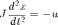
and associated control law. The Matlab function ode45 integrates systems of first-order differential equations. So for simulation purposes, the first step is to recast the ball and beam system as a pair of first-order differential equations.
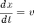
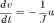
A Matlab vector must hold both and 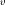. We'll call this vector 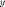 such that 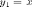 and 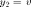. With this notation we have
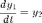
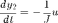
The following Matlab code demonstrates this technique assume u has a constant value.
% Parameters J = 0.5; % Inertia tspan = [0,30]; % Simulation time span ic = [0;0]; % Initial conditions % Assume beam angle is a constant function u = @(t,y) -0.1; % Model Equations f = @(t,y) [y(2); -u(t,y)/J]; % Integration and Plotting ode45(f,tspan,ic); legend('Position','Velocity','Location','NW'); xlabel('Time [s]'); ylabel('Distance [cm]/Velocity [cm/s]');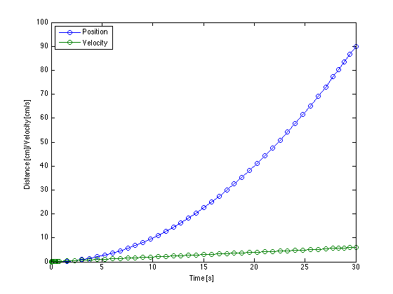
Proportional Control
Feedback control can be used to adjust the beam position in order to bring the ball to a desired position called the setpoint. Here we explore whether or not proportional control can do the job.
Kp = 0.1; xsp = 1; % Proportional feedback control u = @(t,y) Kp*(y(1)-xsp); % Model Equations f = @(t,y) [y(2); -u(t,y)/J]; % Integration and Plotting [t,y] = ode45(f,tspan,ic); subplot(2,1,1) plot(t,y); legend('Position','Velocity'); xlabel('Time [s]'); ylabel('Distance [cm]/Velocity [cm/s]'); subplot(2,1,2); plot(t,arrayfun(@(t,x,v)u(t,[x;v]),t,y(:,1),y(:,2))); legend('Control [rad]'); xlabel('Time [s]'); ylabel('Angle [rad]');

Proportional-Derivative Control (Underdamped)
Derviative action is needed to dampen the feedback control response for the ball and beam system. An analysis shows that the response to P-D control can be underdamped, overdamped, or critically damped.
% Set Kd to a value 1/4 of that needed for critical damping. Kd = 0.25*(sqrt(4*J*Kp)); % Proportional-Derivative Control u = @(t,y) Kp*(y(1)-xsp) + Kd*y(2); % Model Equations f = @(t,y) [y(2); -u(t,y)/J]; % Integration and Plotting [t,y] = ode45(f,tspan,ic); subplot(2,1,1) plot(t,y); legend('Position','Velocity','Pred.'); xlabel('Time [s]'); ylabel('Distance [cm]/Velocity [cm/s]'); subplot(2,1,2); plot(t,arrayfun(@(t,x,v)u(t,[x;v]),t,y(:,1),y(:,2))); legend('Control [rad]'); xlabel('Time [s]'); ylabel('Angle [rad]');
Warning: Ignoring extra legend entries.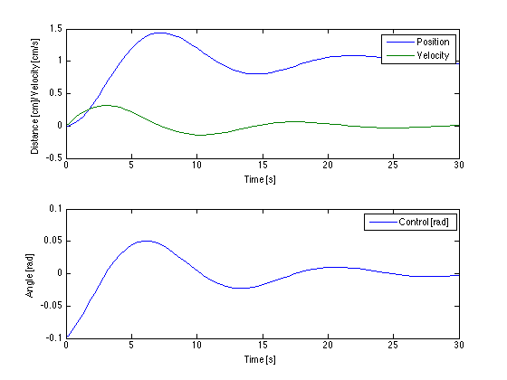
Proportional-Derivative Control (Overdamped)
% Set Kd to a value 4 times of that needed for critical damping. Kd = 4*(sqrt(4*J*Kp)); % Proportional-Derivative Control u = @(t,y) Kp*(y(1)-xsp) + Kd*y(2); % Model Equations f = @(t,y) [y(2); -u(t,y)/J]; % Integration and Plotting [t,y] = ode45(f,tspan,ic); subplot(2,1,1) plot(t,y); legend('Position','Velocity','Location','NW'); xlabel('Time [s]'); ylabel('Distance [cm]/Velocity [cm/s]'); subplot(2,1,2); plot(t,arrayfun(@(t,x,v)u(t,[x;v]),t,y(:,1),y(:,2))); legend('Control [rad]'); xlabel('Time [s]'); ylabel('Angle [rad]');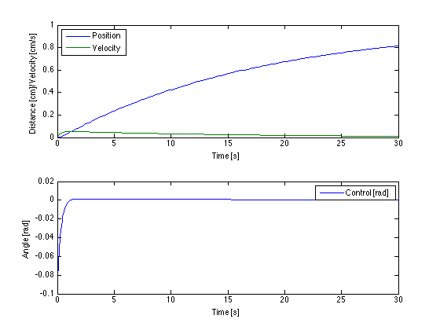
Proportional-Derivative Control (Critically Damped)
% Set Kd to that needed for critical damping. Kd = (sqrt(4*J*Kp)); % Proportional-Derivative Control u = @(t,y) Kp*(y(1)-xsp) + Kd*y(2); % Model Equations f = @(t,y) [y(2); -u(t,y)/J]; % Integration and Plotting [t,y] = ode45(f,tspan,ic); subplot(2,1,1) plot(t,y); legend('Position','Velocity','Location','NW'); xlabel('Time [s]'); ylabel('Distance [cm]/Velocity [cm/s]'); subplot(2,1,2); plot(t,arrayfun(@(t,x,v)u(t,[x;v]),t,y(:,1),y(:,2))); legend('Control [rad]'); xlabel('Time [s]'); ylabel('Angle [rad]');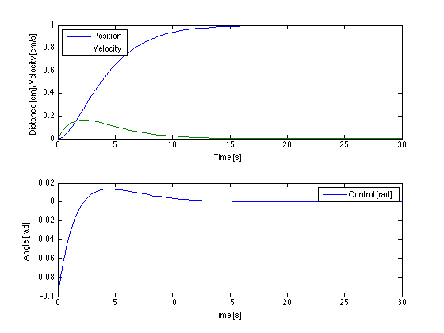